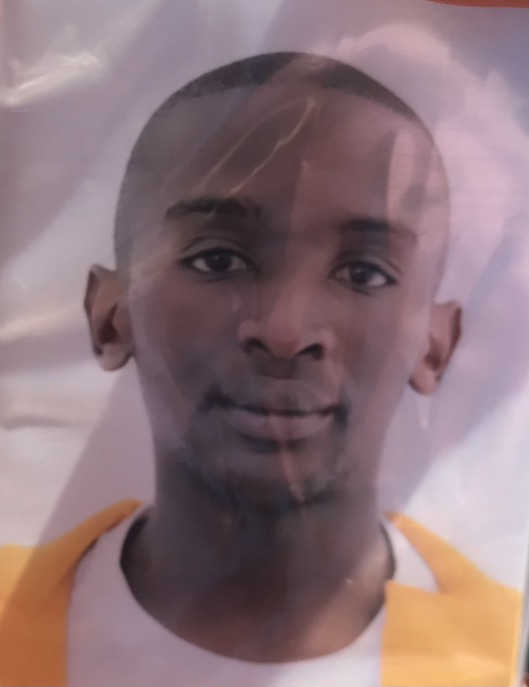

About Me

I am a dedicated Junior Full-Stack Developer based in Cape Town, with a strong foundation
in HTML, CSS, JavaScript, and modern web development practices. After completing the
FNB App Academy Full Stack Developer programme, I have focused on building practical
projects that demonstrate clean code, responsive design, and real-world problem-solving skills.
Some of the projects I have developed include a Tesla Landing Page Clone, YouTube Clone,
Twitter (X) Clone, a fully functional To-Do List application with Local Storage, and a
modern responsive Barber Shop website. These projects have helped me strengthen my skills
in front-end development, DOM manipulation, Local Storage, and creating user-friendly interfaces.
In addition to my technical abilities, I bring hands-on experience in ICT support and
customer service. I am a fast learner who enjoys taking ownership of tasks and continuously
improving my skills. I am currently seeking an opportunity to grow as a Junior Full-Stack
Developer and contribute to meaningful projects in a professional environment.
Projects
Hlomla Mvinjelwa's Barber Website
Designed and developed a modern, fully responsive barbershop website using HTML, CSS, and JavaScript.
The website features a clean design, service sections, contact information, and a user-friendly layout optimised for both desktop and mobile devices.
Visit Live Website →
Tesla Landing Page Clone
Built a fully responsive clone of the Tesla landing page using HTML, CSS, and JavaScript.
Focused on recreating the modern dark theme, smooth animations, clean layout, and high-quality visual design to closely match the official Tesla website.
Visit landing Page →
To-Do List App
Developed a fully functional and interactive To-Do List application using HTML, CSS, and JavaScript.
Users can add new tasks, mark them as completed, delete tasks, and filter between All, Pending, and Completed.
The app uses Local Storage to save data so tasks remain even after refreshing the page.
Visit Live Project →
YouTube Clone
Developed a fully responsive YouTube frontend clone using HTML, CSS, and JavaScript. Implemented video grid layout, thumbnail cards, navigation sidebar, search bar, and hover effects to closely replicate the real YouTube interface and improve layout & UI skills.
Visit landing Page →
Twitter (X) Clone
Built a responsive frontend clone of Twitter (X) using HTML, CSS, and JavaScript.
Focused on recreating the feed layout, post cards, user interactions, and overall modern interface to closely match the real platform.